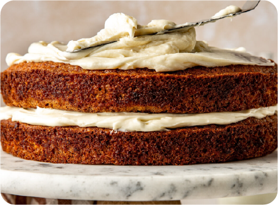

Torta carrot cake. Una receta ideal para la merienda o el finde.
Con zanahoria rallada, canela y un frosting de queso irresistiblemente cremoso, esta torta de estilo americano ya se ganó su lugar en las mesas argentinas. Acá te contamos cómo hacerla, paso a paso.
Ingredientes:
Para la torta:
- Polvo para hornear 1 cdtas.
- Aceite de girasol 360cc.
- Sal 1 pizca.
- Canela molida 1 cda.
- Azúcar común 240 g.
- Azúcar negra 240 g.
- 200 g de harina leudante
- Esencia de vainilla 1 cdta.
- Huevos 5 unidades.
- Zanahorias ralladas 360 g.
Para el frosting:
- 200 g de queso crema.
- 100 g de manteca pomada.
- 100 g de azúcar impalpable.
- Canela molida 1 cda.
- Azúcar común 240 g.
Preparación:

Paso a Paso:
- Encendé el horno a 180 °C y prepará un molde redondo o rectangular enmantecado y enharinado.
- En un bowl, batí los huevos con el azúcar hasta que la mezcla quede espumosa. Sumá el aceite y seguí mezclando.
- Agregá la harina leudante, la canela, la sal y la esencia de vainilla. Integrá bien hasta lograr una masa homogénea.
- Incorporá la zanahoria rallada y, si te gusta, también las nueces picadas. Mezclá con movimientos envolventes.
- Volcá la preparación en el molde y llevá al horno por 40-45 minutos o hasta que al pinchar con un palillo, salga seco.
- Dejá enfriar completamente antes de desmoldar. Esto es clave para que el frosting se mantenga firme.
- Para el frosting, batí la manteca pomada con el azúcar impalpable hasta que blanquee. Sumá el queso crema y la vainilla. Batí unos minutos hasta lograr una crema suave y untuosa.
- Para el frosting, batí la manteca pomada con el azúcar impalpable hasta que blanquee. Sumá el queso crema y la vainilla. Batí unos minutos hasta lograr una crema suave y untuosa.
- Una vez que la torta esté fría, cubrila con el frosting. Podés decorarla con nueces, zanahoria rallada o simplemente dejarla rústica. ¡Y a disfrutar!
TIEMPO DE PREPARACION: 1 hora